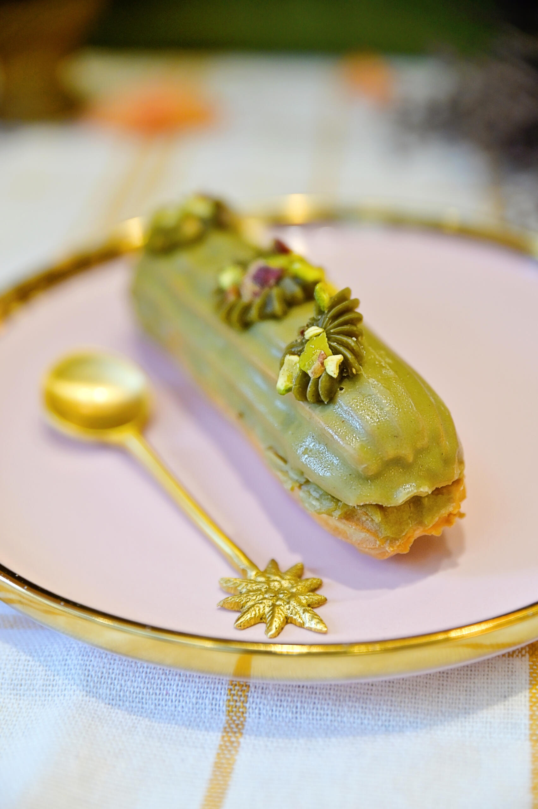

Home
Pistachioéclair

Description
This delightful pistachio éclair is a perfect combination of crisp choux pastry, creamy pistachio filling, and a glossy pistachio glaze. The balance of textures and flavors makes it a treat for any dessert lover.
With its rich and nutty taste, this éclair offers a sophisticated twist on the classic French pastry. Whether enjoyed as a special indulgence or served at elegant gatherings, it's sure to impress!
- For the Choux Pastry:
- 250ml water
- 100g unsalted butter
- 1/2 tsp salt
- 1 tbsp sugar
- 150g all-purpose flour
- 4 large eggs
- For the Pistachio Filling:
- 200g pistachios (shelled)
- 250ml heavy cream
- 150g mascarpone cheese
- 100g powdered sugar
- 1 tsp vanilla extract
- For the Pistachio Glaze:
- 100g powdered sugar
- 2 tbsp pistachio paste
- 1 tbsp milk (adjust for consistency)
- A few crushed pistachios (for garnish)
Step-by-Step Guide
- Prepare the Choux Pastry:
- Preheat your oven to 200°C (400°F) and line a baking sheet with parchment paper.
- In a medium saucepan, combine the water, butter, salt, and sugar. Heat over medium until the butter is melted and the mixture starts to boil.
- Add the flour all at once and stir vigorously with a wooden spoon until the dough comes together and pulls away from the sides of the pan.
- Remove the saucepan from the heat and let the dough cool for about 5 minutes.
- Once the dough is cool enough to touch, add the eggs one at a time, mixing well after each addition until the dough becomes smooth and glossy.
- Pipe and Bake the Choux Pastry:
- Transfer the dough into a piping bag fitted with a large round tip.
- Pipe long lines (about 4 inches) of dough onto the prepared baking sheet, leaving space between each éclair.
- Lightly moisten your finger and gently smooth any peaks on the tops of the éclairs.
- Bake the éclairs for 20-25 minutes, or until they are golden brown and puffed up. Turn off the oven, leave the door slightly ajar, and let the éclairs cool inside for 10 minutes to avoid deflating.
- Make the Pistachio Filling:
- In a food processor, pulse the pistachios until finely ground. If you want a smoother texture, you can also blend them with a bit of cream.
- In a mixing bowl, combine the heavy cream, mascarpone, powdered sugar, and vanilla extract. Whip the cream mixture until it forms soft peaks.
- Fold the ground pistachios into the whipped cream mixture until well combined.
- Make the Pistachio Glaze:
- In a small bowl, mix the powdered sugar and pistachio paste. Add milk a little at a time until the glaze reaches a smooth, pourable consistency.
- Assemble the Éclairs:
- Once the éclairs have cooled, use a small knife to cut a slit along the side of each éclair.
- Pipe the pistachio filling into each éclair through the slit, filling them generously.
- Dip the tops of the filled éclairs into the pistachio glaze, or spread the glaze on top with a spatula.
- Garnish with a few crushed pistachios for an extra crunch and touch of flavor.
- Serve and Enjoy:
- Allow the glaze to set for a few minutes before serving. Enjoy your homemade pistachio éclairs!